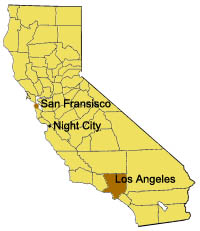
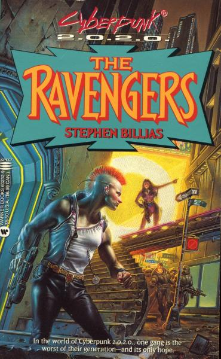
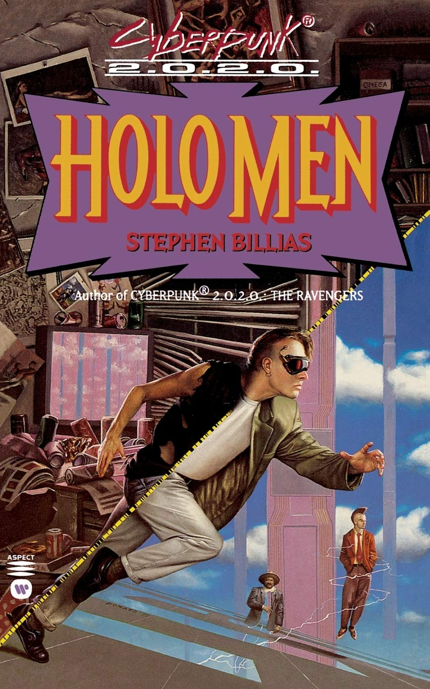
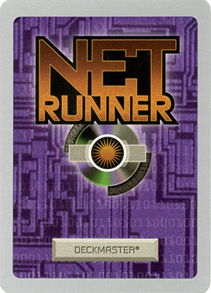
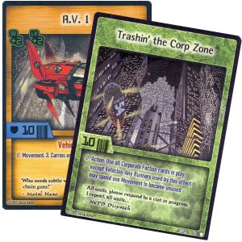
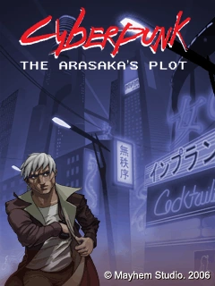
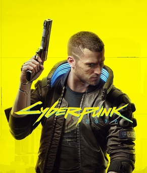

O Universo Distópico de Cyberpunk 2020
Cyberpunk é um RPG de Mesa do gênero cyberpunk escrito por Mike Pondsmith, produzido pela R. Talsorian Games No Brasil, os jogos Cyberpunk 2020 e Cyberpunk Red foram publicados pela Devir Livraria. O RPG ficou também conhecido pela sua adaptação para videogames, o jogo Cyberpunk 2077, desenvolvido pela CD Projekt RED.
História e edições
A primeira edição foi publicada em 1988 com o título de Cyberpunk e sendo ambientada em 2013. A segunda edição é de 1990 mas, para diferenciar o título do gênero cyberpunk, o jogo foi renomeado para Cyberpunk 2020, refletindo o ano em que o cenário é ambientado. Por essa razão, a primeira edição é por vezes referida como Cyberpunk 2013. Cyberpunk 2020 teve duas edições revisadas: a 2.00 de 1992 e a 2.01 de 1993. A terceira edição foi lançada em 2005, e é referida como Cyberpunk v3.0, sendo situada na mesma linha do tempo fictícia de todas as edições anteriores, mas durante o ano de 2030. A quarta edição foi publicada em novembro de 2020 como Cyberpunk Red e é ambientada no ano de 2045. Essa edição — assim como a adaptação videogame Cyberpunk 2077 — ignoram a linha do tempo introduzida em Cyberpunk v3.0 e serve como forma de ligar os eventos de 2077 e 2020.

Foi vencedor do Origins Award 1989 de Best Science-Fiction Role-Playing Game (Melhor RPG de Ficção científica).
Possui um sistema de regras próprio, o Interlock System. Nele o jogador escolhe uma profissão para o seu personagem, sendo que cada profissão apresenta uma perícia especial. O personagem pode se tornar um ciborgue, mas isto tem um impacto psicológico que, em termos de jogo, significa a perda da humanidade, podendo chegar aos casos extremos da cyber psicose.
O sistema de combate (ironicamente denominado Tiroteio de Sexta à Noite) é extremamente letal. Isto obriga os jogadores a usarem mais a tática e estratégia, como emboscadas e fugas, e menos o combate franco.
Ambientação
A ambientação está focada nos Estados Unidos após um colapso econômico na década de 90 seguido de um período de lei marcial, diversas megacorporações assumem o poder político e econômico do pais. Ao mesmo tempo, a tecnologia avança rapidamente, principalmente a bioengenharia, que permite o desenvolvimento de próteses cibernéticas e interfaces homem-máquina diretas. Devido aos anos de anarquia política e econômica, as megacorporações lutam entre si em guerras corporativas, a violência urbana é endêmica nas cidades, e o interior do país se tornou um lugar perigoso sem lei dominado por gangues nômades que vagam pelo que restou das rodovias.

A fictícia Night City é o principal cenário usado nos jogos, apresentada como exemplo de cidade cyberpunk típica, com descrições bastante detalhadas e uma história muito rica. Foi fundada em 1994, na costa oeste dos EUA, assentada sobre uma grande baía, cercada por diversas subcidades e comunidades suburbanas (Westbrook, Heywood, Pacífica, South Night City). Anos de contaminação, negligência e um dos governos mais corruptos do mundo, reduziram muitas destas cidades em áreas semidesérticas, com casas em ruínas, shoppings abandonados e uma criminalidade de rua crescente.
Outras mídias
Anime
Cyberpunk: Edgerunners é um web anime ambientado no universo Cyberpunk produzido pela Studio Trigger na Netflix. O anime foi anunciado pela primeira vez em 2020 como um tie-in para Cyberpunk 2077 e foi lançado em setembro de 2022.

Romances
Stephen Billias escreveu dois romances de Cyberpunk 2020:
- The Ravengers (1995)

- Holo Men (1996)

Jogos de cartas colecionáveis
Dois diferentes, jogos de cartas colecionáveis independentes foram licenciados e produzidos com base em Cyberpunk. O primeiro, chamado Netrunner, foi projetado por Richard Garfield, e lançado pela Wizards of the Coast em 1996. O segundo foi Cyberpunk CCG, lançado em 2003, projetado por Peter Wacks e publicado pela Social Games.


Video game
Em 2007, Mayhem Studio lançou o jogo de plataforma 2D Cyberpunk: Arasaka's Plot para a plataforma J2ME em celulares.

A CD Projekt RED, desenvolvedora da série The Witcher, anunciou em sua Conferência de Verão de 2012 que estava trabalhando em um RPG não-linear com base em Cyberpunk 2020. O jogo é agora conhecido como Cyberpunk 2077 e foi lançado em Dezembro de 2020. Sendo um grande sucesso e a maior referência atual do universo.

Fontes e Refêrencias
As informações deste artigo foram reunidas a partir de fontes relacionadas ao RPG Cyberpunk, sua história, ambientação e adaptações para outras mídias. As referências abaixo permitem consultar informações complementares sobre o universo do jogo.
- R. Talsorian Games — Cyberpunk
Página oficial da editora, com informações sobre o RPG, sua ambientação e o reconhecimento recebido pelo jogo. - R. Talsorian Games — Sobre a editora
Informações institucionais sobre a editora e a expansão da franquia Cyberpunk para outras mídias. - Cyberpunk.net — Cyberpunk: Mercenários
Página oficial sobre o anime ambientado no universo de Cyberpunk 2077
Entrevista com o Criador Mike Pondsmith
Conheça mais sobre o universo Cyberpunk da boca do próprio criador Mike Pondsmith nesta entrevista publicada no canal oficial da R. Talsorian Games no YouTube.